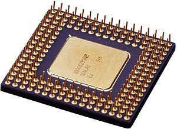
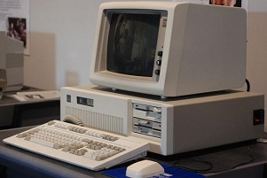

Quinta Generación 1991
En esta generación se denota el reemplazo de las memorias de núcleos
magnéticos por memorias de chips de silicio y, la incorporación de muchos más
componentes en un chip como producto de la miniaturización de los circuitos. El
tamaño reducido el microprocesador hizo posible la creación de las computadoras
personales.
En 1971, Intel, presenta el primer microprocesador o Chip de 4 bits, que en
un espacio de aproximadamente 4 x 5 mm contenía 2 250 transistores. Este primer
microprocesador fue bautizado como el 4004.

Surgieron una gran cantidad de fabricantes de computadoras personales,
que utilizan diferentes estructuras o arquitecturas, que compiten en el mercado.
Esta generación de computadoras se caracterizó por grandes avances
tecnológicos realizados en un tiempo muy corto.
Los sistemas operativos han alcanzado un notable desarrollo, sobre todo por
la posibilidad de generar gráficos a grandes velocidades, lo cual permite utilizar las
interfaces con ventanas, iconos, menús desplegables para facilitar la comunicación
entre usuario y sistema.
